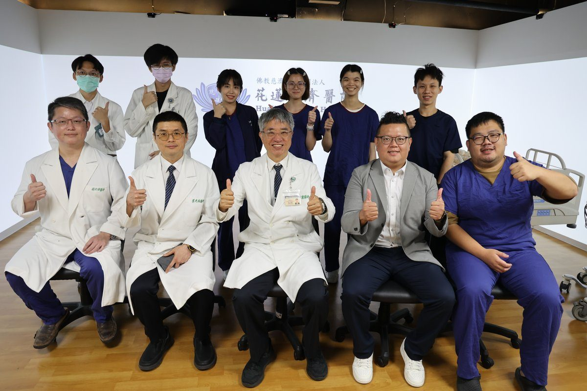

花蓮慈院啟用沉浸式教室 三面投影擬真急救演練

可樂電子報小編/編輯
花蓮慈濟醫院11日啟用「沉浸式未來教室」，把急診現場搬進教室。三面高規格投影牆搭配環繞立體音效，並導入AI技術，醫護人員不必配戴VR頭盔，就能在近乎真實的情境裡反覆演練，從急重症處置一路練到團隊資源管理（TRM）。院方形容，這是醫學教育從「無語良師」、「良語良師」再走向「高科技良師」的關鍵一步。

啟用典禮上，一場急救演練隨即登場。「32歲男性，重型機車車禍，意識不清，幾秒鐘後就要抵達急診！」大量失血的創傷病人送進急診，三面投影牆重現急診現場，環境音裡還聽得見病人沉重的呼吸。從止血、檢查、聯繫血庫、給藥到插管，病人接著心跳突然停止，團隊立刻施行高級心臟救命術並找出心跳停止的原因，每個環節都在考驗臨場判斷與合作默契。

演練結束後，團隊成員逐一檢視過程中的優缺點與改善空間。計畫主持人、急診專科護理師劉銘文表示，這套系統是國內創新的教學模式，透過高度擬真的視覺與情境互動，學員更容易融入教學場景；院方已開辦三場工作坊培育種子教師，未來不論新進人員或資深醫護，都能依不同教材安排教學與學習。
急診部第五年住院醫師金紹傑觀察，過去推動擬真教學時，新進人員常難以融入情境，資深醫師帶領學弟妹也多仰賴口傳心授。如今學員能直接觀察病人的生理變化與出血情形，還能搭配即時插管教學影片，學習內容更為具體；演練現場的儀器與環境也貼近實際照護情境，有助醫護人員提前熟悉臨床狀況。

參與演練的急診護理師蕭嘉樺則說，花蓮慈院是花蓮唯一的醫學中心，經常收治病情嚴重、情況危急的病人，對新進人員來說難免措手不及，透過反覆練習，面對突發狀況會更清楚如何應對。實習醫學生鄭荻諺用「相見恨晚」形容這間教室，他認為模擬教室最重要的幫助，是讓學生了解教科書知識與實務的差別，並思考急救過程中如何做得更好。
身兼教學部副主任與國際擬真醫學教育中心主任的葉光庭醫師指出，花蓮慈院向來以人文與實作的醫學教育聞名，從「無語良師」一路發展到結合前沿科技的「高科技良師」。過去以假人或VR頭盔訓練，常有沉浸感不足、配戴不適的限制；在健康臺灣深耕計畫支持下，新教室讓學員不必穿戴裝置就能身歷其境，還能切換居家訪視，甚至投影森林、流水與鳥鳴，成為醫護抒壓的療癒空間。

副院長陳宗鷹表示，建置沉浸式未來教室是醫院推動「健康3.0」與教育向下紮根的重要計畫。花蓮慈院擁有12至13個醫事職類，臨床照護高度仰賴跨團隊合作，透過這間教室，從醫學生、住院醫師（PGY）、專科護理師到藥劑、放射、復健、營養等人員，都能針對同一套急重症教案進行小組教學與團隊資源管理演練，強化跨領域整合與協作能力，提升整體醫療能量。
📸 更多現場紀實影像


🌟 掌握花蓮在地第一手資訊・歡迎訂閱追蹤
深度紀實報導、在地精采影音專題，第一時間接收最新消息！